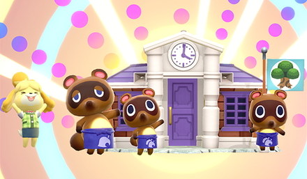

Appearances
Isabelle first appeared in the 2012 video game Animal Crossing: New Leaf along with her twin brother Digby. In the game, she acts as the secretary to the player character, who becomes the town mayor, and assists them with various tasks. She has appeared in several Animal Crossing games since, including Animal Crossing: Happy Home Designer, Animal Crossing: amiibo Festival, Animal Crossing: Pocket Camp and Animal Crossing: New Horizons.
Outside of the Animal Crossing franchise, Isabelle has also appeared in the Super Smash Bros. series, first appearing as an assist trophy in Super Smash Bros. for Nintendo 3DS and Wii U before becoming a playable fighter in the Nintendo Switch sequel Super Smash Bros. Ultimate. Isabelle also appears in the Wii U video game Mario Kart 8 as a downloadable racer, as well as in its Nintendo Switch port Mario Kart 8 Deluxe. Player costumes based on Isabelle appear in Super Mario Maker and Monster Hunter 4 Ultimate. Isabelle also appears as part of Nintendo's amiibo line of toys-to-life figures. She has two figures from the Animal Crossing line, one from the Smash Bros. line, and five Animal Crossing amiibo cards.
Personality
In New Leaf, Isabelle tries her hardest to look up to the mayor as their secretary. Whenever the mayor completes a public works project, she will ask the mayor if they want to attend a celebration for the project's completion, and will frown if the mayor vows out with the celebration. She also values the health and safety of the player, especially in instances where the player hasn't played their town in months. During holidays and events, Isabelle will tell the mayor to take a break from their duties in order to enjoy the festivities. She will also close town hall if she ends up going to the plaza to celebrate.
In New Horizons, Isabelle retains her hardworking nature from New Leaf, but she has also been shown to be extroverted, especially in the instance of her morning announcements. Routinely, she occasionally talks about television, or various aspects regarding her life, such as Digby and her missing sock, only to blush after realizing that what she said does not qualify as news. As of 2.0, this doesn't happen as often, as she usually has different announcements to give.